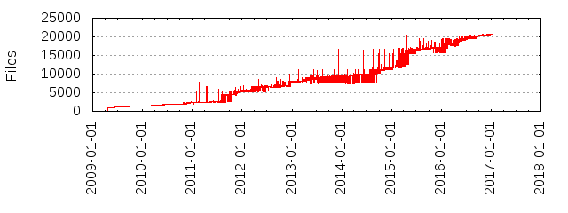

Files
- Total files
- 20701
- Total lines
- 5474399
- Average file size
- 10105.38 bytes
| Extension | Files (%) | Lines (%) | Lines/file |
|---|
| 1047 (5.06%) | 92955 (1.70%) | 88 |
| 0 | 1 (0.00%) | 42 (0.00%) | 42 |
| 1 | 60 (0.29%) | 4854 (0.09%) | 80 |
| 2 | 1 (0.00%) | 2 (0.00%) | 2 |
| 3 | 1 (0.00%) | 151 (0.00%) | 151 |
| 5 | 5 (0.02%) | 2413 (0.04%) | 482 |
| 686 | 1 (0.00%) | 51 (0.00%) | 51 |
| 7 | 11 (0.05%) | 3448 (0.06%) | 313 |
| APACHE2 | 3 (0.01%) | 45 (0.00%) | 15 |
| ASN1 | 2 (0.01%) | 194 (0.00%) | 97 |
| BSD | 6 (0.03%) | 119 (0.00%) | 19 |
| DJGPP | 1 (0.00%) | 47 (0.00%) | 47 |
| ENGINE | 1 (0.00%) | 289 (0.01%) | 289 |
| MIT | 3 (0.01%) | 72 (0.00%) | 24 |
| MacOS | 1 (0.00%) | 72 (0.00%) | 72 |
| Makefile | 1 (0.00%) | 6 (0.00%) | 6 |
| NW | 1 (0.00%) | 454 (0.01%) | 454 |
| OS2 | 1 (0.00%) | 31 (0.00%) | 31 |
| R | 4 (0.02%) | 305 (0.01%) | 76 |
| README | 1 (0.00%) | 44 (0.00%) | 44 |
| RootCerts | 1 (0.00%) | 4 (0.00%) | 4 |
| S | 45 (0.22%) | 43938 (0.80%) | 976 |
| SSLeay | 1 (0.00%) | 968 (0.02%) | 968 |
| TXT | 1 (0.00%) | 4 (0.00%) | 4 |
| VMS | 1 (0.00%) | 293 (0.01%) | 293 |
| W32 | 1 (0.00%) | 325 (0.01%) | 325 |
| W64 | 1 (0.00%) | 66 (0.00%) | 66 |
| WCE | 1 (0.00%) | 95 (0.00%) | 95 |
| ac | 2 (0.01%) | 106 (0.00%) | 53 |
| adb | 7 (0.03%) | 1948 (0.04%) | 278 |
| ads | 3 (0.01%) | 892 (0.02%) | 297 |
| after | 1 (0.00%) | 2 (0.00%) | 2 |
| am | 3 (0.01%) | 464 (0.01%) | 154 |
| android | 1 (0.00%) | 72 (0.00%) | 72 |
| asm | 98 (0.47%) | 191319 (3.49%) | 1952 |
| attr | 1 (0.00%) | 1 (0.00%) | 1 |
| bak | 1 (0.00%) | 683 (0.01%) | 683 |
| bat | 46 (0.22%) | 2730 (0.05%) | 59 |
| bc | 1 (0.00%) | 50 (0.00%) | 50 |
| before | 1 (0.00%) | 1 (0.00%) | 1 |
| bin | 1 (0.00%) | 5 (0.00%) | 5 |
| bnf | 1 (0.00%) | 16 (0.00%) | 16 |
| bor | 2 (0.01%) | 225 (0.00%) | 112 |
| build | 1 (0.00%) | 32 (0.00%) | 32 |
| c | 1312 (6.34%) | 549541 (10.04%) | 418 |
| cares | 1 (0.00%) | 13 (0.00%) | 13 |
| cc | 1157 (5.59%) | 1338896 (24.46%) | 1157 |
| cfg | 2 (0.01%) | 129 (0.00%) | 64 |
| chm | 1 (0.00%) | 212 (0.00%) | 212 |
| clp | 1 (0.00%) | 110 (0.00%) | 110 |
| cmakein | 2 (0.01%) | 526 (0.01%) | 263 |
| cmd | 3 (0.01%) | 126 (0.00%) | 42 |
| cnf | 32 (0.15%) | 1721 (0.03%) | 53 |
| coffee | 2 (0.01%) | 66 (0.00%) | 33 |
| com | 42 (0.20%) | 13591 (0.25%) | 323 |
| conf | 3 (0.01%) | 279 (0.01%) | 93 |
| contrib | 1 (0.00%) | 78 (0.00%) | 78 |
| cpp | 377 (1.82%) | 264629 (4.83%) | 701 |
| crl | 1 (0.00%) | 9 (0.00%) | 9 |
| crt | 7 (0.03%) | 172 (0.00%) | 24 |
| cs | 9 (0.04%) | 1614 (0.03%) | 179 |
| csproj | 1 (0.00%) | 141 (0.00%) | 141 |
| css | 8 (0.04%) | 1546 (0.03%) | 193 |
| css_t | 1 (0.00%) | 396 (0.01%) | 396 |
| d | 3 (0.01%) | 1099 (0.02%) | 366 |
| dat | 1 (0.00%) | 5697 (0.10%) | 5697 |
| def | 11 (0.05%) | 1069 (0.02%) | 97 |
| default | 2 (0.01%) | 1627 (0.03%) | 813 |
| deps | 1 (0.00%) | 39 (0.00%) | 39 |
| dif | 1 (0.00%) | 26 (0.00%) | 26 |
| dj2 | 1 (0.00%) | 104 (0.00%) | 104 |
| doc | 2 (0.01%) | 497 (0.01%) | 248 |
| doxy | 1 (0.00%) | 7 (0.00%) | 7 |
| ec | 17 (0.08%) | 146 (0.00%) | 8 |
| el | 8 (0.04%) | 803 (0.01%) | 100 |
| emx | 2 (0.01%) | 138 (0.00%) | 69 |
| esprima | 1 (0.00%) | 19 (0.00%) | 19 |
| examples | 1 (0.00%) | 49 (0.00%) | 49 |
| fail | 1 (0.00%) | 1 (0.00%) | 1 |
| fdlibm | 1 (0.00%) | 6 (0.00%) | 6 |
| fontified | 2 (0.01%) | 2214 (0.04%) | 1107 |
| fre | 1 (0.00%) | 18 (0.00%) | 18 |
| func-info | 1 (0.00%) | 35 (0.00%) | 35 |
| gc-state | 1 (0.00%) | 27 (0.00%) | 27 |
| gcc | 2 (0.01%) | 199 (0.00%) | 99 |
| gif | 1 (0.00%) | 8 (0.00%) | 8 |
| gn | 9 (0.04%) | 3416 (0.06%) | 379 |
| gni | 7 (0.03%) | 521 (0.01%) | 74 |
| golden | 71 (0.34%) | 27360 (0.50%) | 385 |
| gost | 1 (0.00%) | 300 (0.01%) | 300 |
| gpr | 1 (0.00%) | 20 (0.00%) | 20 |
| gyp | 65 (0.31%) | 9954 (0.18%) | 153 |
| gypi | 15 (0.07%) | 5724 (0.10%) | 381 |
| gz | 6 (0.03%) | 329 (0.01%) | 54 |
| h | 1658 (8.01%) | 615532 (11.24%) | 371 |
| hpp | 2 (0.01%) | 251 (0.00%) | 125 |
| hpux10-cc | 1 (0.00%) | 34 (0.00%) | 34 |
| hqx | 2 (0.01%) | 5760 (0.11%) | 2880 |
| html | 112 (0.54%) | 16103 (0.29%) | 143 |
| ico | 3 (0.01%) | 0 (0.00%) | 0 |
| in | 12 (0.06%) | 1818 (0.03%) | 151 |
| inc | 3 (0.01%) | 6201 (0.11%) | 2067 |
| ini | 3 (0.01%) | 32 (0.00%) | 10 |
| input | 5 (0.02%) | 54 (0.00%) | 10 |
| isolate | 27 (0.13%) | 574 (0.01%) | 21 |
| jpg | 9 (0.04%) | 807 (0.01%) | 89 |
| js | 10356 (50.03%) | 1157403 (21.14%) | 111 |
| js-script | 2 (0.01%) | 16 (0.00%) | 8 |
| json | 582 (2.81%) | 72250 (1.32%) | 124 |
| jst | 27 (0.13%) | 1957 (0.04%) | 72 |
| js~ | 1 (0.00%) | 56 (0.00%) | 56 |
| key | 8 (0.04%) | 222 (0.00%) | 27 |
| lis | 1 (0.00%) | 22 (0.00%) | 22 |
| lnx | 1 (0.00%) | 20 (0.00%) | 20 |
| log | 3 (0.01%) | 2649 (0.05%) | 883 |
| lua | 2 (0.01%) | 514 (0.01%) | 257 |
| m4 | 3 (0.01%) | 2440 (0.04%) | 813 |
| mak | 4 (0.02%) | 284 (0.01%) | 71 |
| man | 2 (0.01%) | 292 (0.01%) | 146 |
| manifest | 1 (0.00%) | 17 (0.00%) | 17 |
| map | 7 (0.03%) | 83 (0.00%) | 11 |
| mar | 2 (0.01%) | 6464 (0.12%) | 3232 |
| markdown | 30 (0.14%) | 7612 (0.14%) | 253 |
| md | 665 (3.21%) | 121581 (2.22%) | 182 |
| mingw | 1 (0.00%) | 85 (0.00%) | 85 |
| mk | 2 (0.01%) | 326 (0.01%) | 163 |
| mms | 1 (0.00%) | 48 (0.00%) | 48 |
| msc | 3 (0.01%) | 292 (0.01%) | 97 |
| msvc | 1 (0.00%) | 142 (0.00%) | 142 |
| mul | 1 (0.00%) | 19 (0.00%) | 19 |
| node | 11 (0.05%) | 11 (0.00%) | 1 |
| nsi | 1 (0.00%) | 86 (0.00%) | 86 |
| num | 3 (0.01%) | 5745 (0.10%) | 1915 |
| opt | 10 (0.05%) | 18 (0.00%) | 1 |
| opts | 3 (0.01%) | 7 (0.00%) | 2 |
| org | 1 (0.00%) | 681 (0.01%) | 681 |
| ors | 36 (0.17%) | 864 (0.02%) | 24 |
| os2 | 1 (0.00%) | 136 (0.00%) | 136 |
| out | 158 (0.76%) | 1450 (0.03%) | 9 |
| pas | 4 (0.02%) | 1443 (0.03%) | 360 |
| patch | 10 (0.05%) | 4650 (0.08%) | 465 |
| pbfilespec | 2 (0.01%) | 54 (0.00%) | 27 |
| pdf | 3 (0.01%) | 1962 (0.04%) | 654 |
| pem | 190 (0.92%) | 4323 (0.08%) | 22 |
| pfx | 1 (0.00%) | 7 (0.00%) | 7 |
| pk | 1 (0.00%) | 0 (0.00%) | 0 |
| pl | 194 (0.94%) | 131893 (2.41%) | 679 |
| plist | 2 (0.01%) | 9 (0.00%) | 4 |
| pm | 1 (0.00%) | 19 (0.00%) | 19 |
| png | 24 (0.12%) | 2865 (0.05%) | 119 |
| pod | 371 (1.79%) | 43703 (0.80%) | 117 |
| pro | 1 (0.00%) | 767 (0.01%) | 767 |
| proto | 1 (0.00%) | 61 (0.00%) | 61 |
| pup | 1 (0.00%) | 69 (0.00%) | 69 |
| py | 341 (1.65%) | 117707 (2.15%) | 345 |
| pyl | 1 (0.00%) | 670 (0.01%) | 670 |
| pyt | 2 (0.01%) | 378 (0.01%) | 189 |
| qpg | 1 (0.00%) | 141 (0.00%) | 141 |
| raw | 1 (0.00%) | 4 (0.00%) | 4 |
| rc | 8 (0.04%) | 509 (0.01%) | 63 |
| reg | 11 (0.05%) | 11 (0.00%) | 1 |
| reg2 | 13 (0.06%) | 13 (0.00%) | 1 |
| riscos | 1 (0.00%) | 151 (0.00%) | 151 |
| rst | 43 (0.21%) | 7871 (0.14%) | 183 |
| s | 187 (0.90%) | 356158 (6.51%) | 1904 |
| sas | 1 (0.00%) | 68 (0.00%) | 68 |
| scm | 1 (0.00%) | 286 (0.01%) | 286 |
| settings | 3 (0.01%) | 28 (0.00%) | 9 |
| sh | 81 (0.39%) | 5634 (0.10%) | 69 |
| sha1 | 6 (0.03%) | 4 (0.00%) | 0 |
| shared | 1 (0.00%) | 655 (0.01%) | 655 |
| sln | 1 (0.00%) | 36 (0.00%) | 36 |
| sol | 1 (0.00%) | 16 (0.00%) | 16 |
| spec | 2 (0.01%) | 326 (0.01%) | 163 |
| srl | 8 (0.04%) | 8 (0.00%) | 1 |
| ss | 7 (0.03%) | 83 (0.00%) | 11 |
| status | 20 (0.10%) | 3434 (0.06%) | 171 |
| stp | 1 (0.00%) | 125 (0.00%) | 125 |
| strongtalk | 1 (0.00%) | 29 (0.00%) | 29 |
| sty | 1 (0.00%) | 119 (0.00%) | 119 |
| svg | 2 (0.01%) | 284 (0.01%) | 142 |
| tap | 1 (0.00%) | 39 (0.00%) | 39 |
| tar | 3 (0.01%) | 17 (0.00%) | 5 |
| targ | 2 (0.01%) | 570 (0.01%) | 285 |
| tc | 1 (0.00%) | 100 (0.00%) | 100 |
| template | 23 (0.11%) | 2996 (0.05%) | 130 |
| test | 2 (0.01%) | 2 (0.00%) | 1 |
| tgz | 7 (0.03%) | 283 (0.01%) | 40 |
| tmpl | 2 (0.01%) | 85 (0.00%) | 42 |
| ts | 1 (0.00%) | 276 (0.01%) | 276 |
| txt | 639 (3.09%) | 173449 (3.17%) | 271 |
| v8 | 1 (0.00%) | 26 (0.00%) | 26 |
| valgrind | 1 (0.00%) | 45 (0.00%) | 45 |
| valid | 1 (0.00%) | 1 (0.00%) | 1 |
| vcxproj | 1 (0.00%) | 181 (0.00%) | 181 |
| vim | 2 (0.01%) | 254 (0.00%) | 127 |
| wasm | 3 (0.01%) | 0 (0.00%) | 0 |
| wixproj | 1 (0.00%) | 94 (0.00%) | 94 |
| world | 1 (0.00%) | 1 (0.00%) | 1 |
| wxl | 4 (0.02%) | 152 (0.00%) | 38 |
| wxs | 1 (0.00%) | 366 (0.01%) | 366 |
| xclangspec | 2 (0.01%) | 452 (0.01%) | 226 |
| xml | 8 (0.04%) | 2825 (0.05%) | 353 |
| xs | 1 (0.00%) | 268 (0.00%) | 268 |
| yaml | 1 (0.00%) | 46 (0.00%) | 46 |
| yml | 96 (0.46%) | 1108 (0.02%) | 11 |
| yz | 1 (0.00%) | 1 (0.00%) | 1 |
| z | 1 (0.00%) | 0 (0.00%) | 0 |
| zip | 1 (0.00%) | 1068 (0.02%) | 1068 |